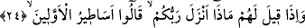
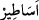
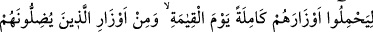
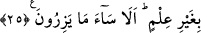

Pâdişahlık tâcını istersen, içindeki cevheri göster
Yoksa Cemşid’in, Feridun’un soyundan olmak faydasız
Ya Rabbi bizi, yaltaklanma ehlinden değil tevâzu ehlinden kıl. Tahallûktan (ahlâk
sâhibi olduktan) sonra da tahakkuk ashabından (işin hakîkatine erenlerden) eyle.
24. Onlara: Rabbiniz ne indirdi? denildiği zaman, “Öncekilerin masallarını”
derler.
Sa’dî der ki: Kureyşliler toplandı ve şöyle konuştular: “Muhammed tatlı dilli bir
insandır. Birisiyle konuşsa onun kalbini celb ediyor. İçinizden ileri gelen bazı kimseleri
seçin; onları bir veya iki gece Mekke sokaklarına gönderin. Onu arama arzusuyla geleni
geri çevirsinler.” Bunun üzerine onlardan seçilen kişiler Mekke’nin yollarını tuttular.
Herhangi bir kavmin temsilcisi Muhammed (s.a.)’in ne dediğini görmek için geldiğinde
onların yanına varırdı. Onlar da ona: “O yalancı biridir, O’na sâdece sefihler, köleler
ve hayrı olmayan kimseler tâbi oluyor. Kureyş’in yaşlıları ve ileri gelenleri ise onu terk
ettiler.” Sonunda biri o kimseyi geri çevirirdi. Şâyet gelen temsilci Allah’ın hidâyetine
nâil olacak biriyse: “Ben bir günlük yoldan gelmişim. Bir de onunla karşılaşmadan
dönersem kavmimin ne kötü bir elçisi olurum. Ben, bu adamın ne dediğine bakacağım.”
derdi. Ardından Mekke’ye girer, mü’minlerle karşılaşır, onlara Hz. Peygamber (s.a.)’in
ne dediğini sorardı. Onlar da ona müsbet cevap verirlerdi. İşte şu âyet bu hususu
anlatmaktadır:
“Onlara:” yâni heyetlerin veya hac mevsiminde hacı kafilelerinin önünü kesen
müstekbir müşriklere “Rabbiniz” Muhammed’e “ne indirdi?” denildiği zaman,” asıl
cevabı vermekten kaçınarak “Öncekilerin masallarını” yâni nüzûlünü iddiâ ettiğiniz
şeyler önceki ümmetlerin haberleri ve asılsız rivâyetleridir. Aslında indirilen bir şey
yoktur. O’nun okuduğu eskilerin hikâyeleridir. “derler.” Çünkü onlar Kur’an’ın inzâlini
inkâr etmektedirler. Şu âyet ise onların sözünün aksinedir: “(Kötülüklerden)
sakınanlara: “Rabbiniz ne indirdi?” denilince; “Hayır indirdi.” derler.” (en-Nahl,
16/30)
el-Kâmûs’ta der ki: “
el-Esâtîr”, düzensiz haberlerdir.